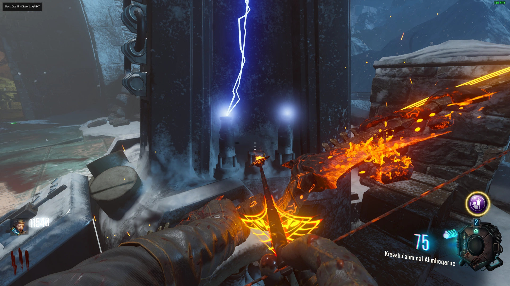

Dead Again
Interact with 3 Teddy Bears in the following locations:

Requiem Aeternam: Sequentia-Dies Irae
Interact with 3 Gramophones in the following locations:
Free Mega Gobblegum
Pick up the Plant in the Teleporter Room, then place the Plant while back in Time
Interact with the Plant once you return to the Present Time to get a Random Mega Gobblegum
BRM Wall Buy
Wall Run over all of the Blue Plates in the Undercroft
You can buy the BRM on the Wall above the Buildable Table
Rocket Shield
Obtain the First Part of the Rocket Shield near the Lower Courtyard in the following locations:
Obtain the Second Part of the Rocket Shield near the Upper Courtyard in the following locations:
Obtain the Third Part of the Rocket Shield on the Walls in the Undercroft in the following locations:
Build it at one of the Buildable Tables
Ragnarok DG-4
Obtain the 3 Ragnarok Parts
Kill a Panzer
Activate the Death Ray, then use the Wundersphere that has the Part in its Path
Hit the Lever on the Rocket Test Site Pad while the Rocket is Testing, go into the Bunker before the Door Closes
Survive until the 3 Green Lights are on, Interact with the Console, then grab the Part from Inside the Teleporter
Build it at one of the Buildable Tables
Panzer Claw Helmet
Kill a Panzer by Hitting it with all 3 Claws in the following locations:
Ceiling in the Tunnel to Trophy Room

The Rafters by the Tower in the Lower Courtyard
The Rafters in the Room with the Knight Statues
Plunger Easter Egg
Shoot the Wall in the Top of the Clock Tower, then Place the Ragnaroks
Use the Lever in the Lower Part of the Clock Tower to Start/Stop the Clock, set the Clock to 9:35
Wall Run on the Blue Symbols in the Undercroft and a Player will get Teleported Back in Time and Pick up the Plunger to the Left of the Teleporter
Skeleton Easter Egg
Use In Plain Sight and Shoot Skulls with a Bow

Pack-a-Punch
Teleport the PaP Parts, the PaP will appear wherever you don't Teleport the Pieces

Wrath of The Ancients
Kill Zombies in front of the Dragon Statue on the Wall once it's done Eating
Electric Bow
Shoot Weather Vane near the Death Ray with The Wrath of The Ancients, and Grab the Broken Arrow
Shoot the 3 Wood Pyres outside the Map
Go to the Undercroft and Wall-run over all 5 Wind Symbols without touching the Ground
Get 5 Kills near the Sparking Urns
Charge the Bow near the Charged Urns to Apply the Spark to the Arrow and Shoot the Pyres again to Electrify Them
Interact with the Blue Cloud near the Death Ray
Pick up the Storm Arrow, then go to Undercroft and Insert the Arrow into the Storm Pedestal
Get 20 Kills then Interact with the Arrow Again to Finalize the Upgrade
Wolf Bow
Interact with the Paintings in a Specific Order (The Paintings are in Random Places each Game)
Knight with Wolves by His Side, Knight Riding into Battle, Castle Attacked by Dragon, then Knight Dead
Grab the Broken Arrow from the Wall in the Undercroft
Go to Rocket Pad, and Shoot the Red Flag on the Mountain above the Blast Door at the Rocket Test Site
Collect the Wolf Skull, go to the Undercroft, then Interact with the Bones next to the Wolf Pedestal

Follow the Wolf and Kill 10 Zombies next to the Glowing Dig Spot, then Interact with the Dig Spot
Wallrun and Shoot the 2 Wolves Symbol while Wall-Running, Jump on the Platform that Appears, then Interact with the Coffin to Assemble the Skeleton
Pick up the Wolf Arrow, then go to Undercroft and Insert the Arrow into the Wolf Pedestal
Get 20 Kills then Interact with the Arrow Again to Finalize the Upgrade
Fire Bow
Shoot the Wall upstairs in the Clock Tower with The Wrath of The Ancients, and Grab the Broken Arrow
Go to Rocket Test Site and wait for a Test Launch
Once the Test is over Quickly Run Outside and Shoot the Glowing Rock to the Right

Shoot all 3 Circles while Midair from the Wundersphere, then Get 10 kills in each Circle
Go to the Clock Tower and Interact with the Clock in the Clock Tower, it will show you an Apothican Symbol Corresponding to one of the Fireplaces


The Circle Closest to that Fireplace will Still be Illuminated
Get the Rock from the Circle to the Fireplace in 3 shots
Interact with the Fireplace, then Interact with the Giant Magma Orb at the Death Ray
Pick up the Fire Arrow, then go to Undercroft and Insert the Arrow into the Fire Pedestal
Get 20 Kills then Interact with the Arrow Again to Finalize the Upgrade
Void Bow
Go to the Room above Double Tap, Shoot Purple Symbol on Wall with The Wrath of The Ancients, and Grab the Broken Arrow
Go to the Room beneath the Clock Tower, Get a Knife Kill over the Glowing Purple Platform, then Interact with it
Find all 6 decapitated heads
Sacrifice 6 Crawlers to the Floating Heads around the Floating Urn
Listen for the 3 Names (Shoot the Urn to Hear the Names again)
Go to Power Room and Church Connector and look for the Knights with the Corresponding Picture
Interact with the 3 Knights, it will give you a Symbol
Collect the Symbols by Killing Zombies and Collect the Power-ups
Go Back to the Ritual Room and Shoot the Corresponding Symbols on the Ground that you got from the Knights in Order, then Interact with the Glowing Beam
Pick up the Void Arrow, then go to Undercroft and Insert the Arrow into the Void Pedestal
Get 20 Kills then Interact with the Arrow Again to Finalize the Upgrade
Main Quest
Obtain 1 Upgraded Bow
Shoot the Prongs on the Top of the Teleporter with the Wrath of The Ancients
Find and Shoot 4 Wisps Around the Map with an Upgraded Bow

Travel Back in Time by going into the Teleporter while it's Purple
Pick up the Blue MPD Canister in the Corner of the Room, the Fuse, and Write down the Code from the Safe
Place the Fuse into the Death Ray then switch it to Protect Mode (Activate it if you haven't previously)
Go to the Computer Terminal next to the Clock Tower, and enter the Code for the Safe
Pick up the Tesla Coils and Floppy Disk from the Safe
Place the Tesla Coils into the Death Ray Pylons, then set the Death Ray to Destroy Mode

Go to the 2 Terminals and Play Simon Says
Go to the Death Ray and Press the Green Button
Go to the Crash Site and pick up the Golden Rod
Repeat the Wisp Step, go back in Time, Interact with the Computer in the Corner, and pick up the Keeper Tablet from the 935 Box in the Corner
Place the Golden Rod into the Tomb in Front of the Bow Pedestal
Follow the Apothicon to the Ritual Circle and Fill the Soul Box with the Upgraded Bow Corresponding to the Color at the Bottom of the Screen
When you get to the Circle Near Double Tap you have to Place the Keeper Tablet
-Courtyard by the Wundersphere
-Tunnel by Mule Kick
-Near Double Tap
-In the Knight Room by the Power Room
**PREPARE FOR THE BOSS FIGHT**
Place the Canister in the Corner of the MPD in the Undercroft
All Players must Place the Ragnarok DG-4's on a Different Low Gravity Pressure Plate
To kill the Boss you want to Place the Ragnarok DG-4's in the Center of the Room to Trap Him
While He is Trapped You want to Shoot Him in the Chest
Recharge your Ragnarok DG-4's by Getting Kills
If the Boss starts Charging the Lightning Attack Hide behind one of the Pillars or you will be 1-Shot
Take the Summoning Key from the MPD and Place it onto the Terminal by the Clocktower to Start the Cutscenes